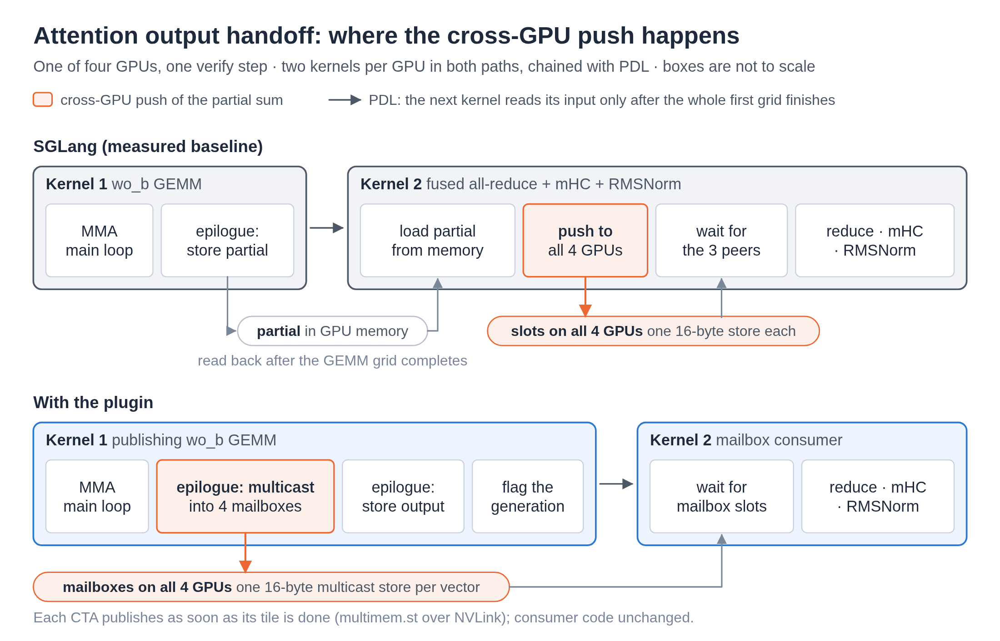
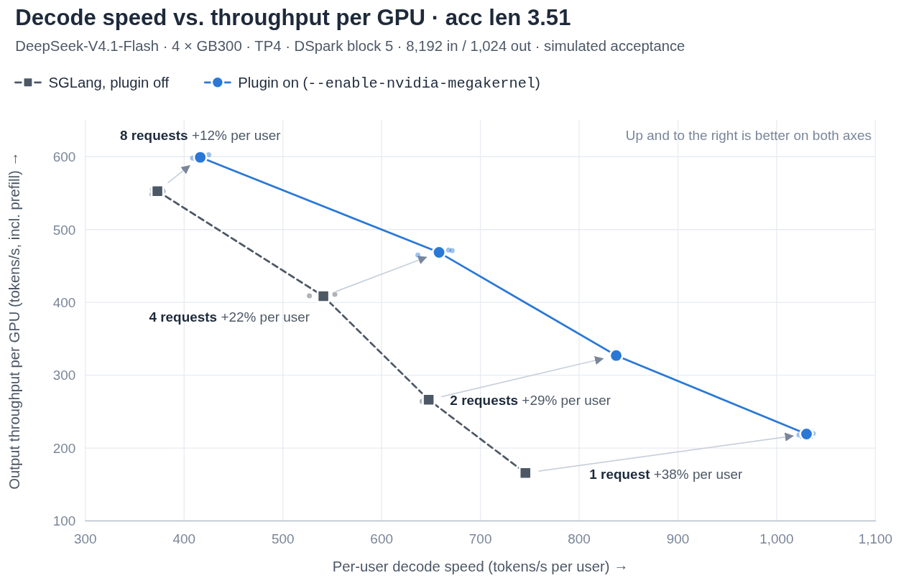
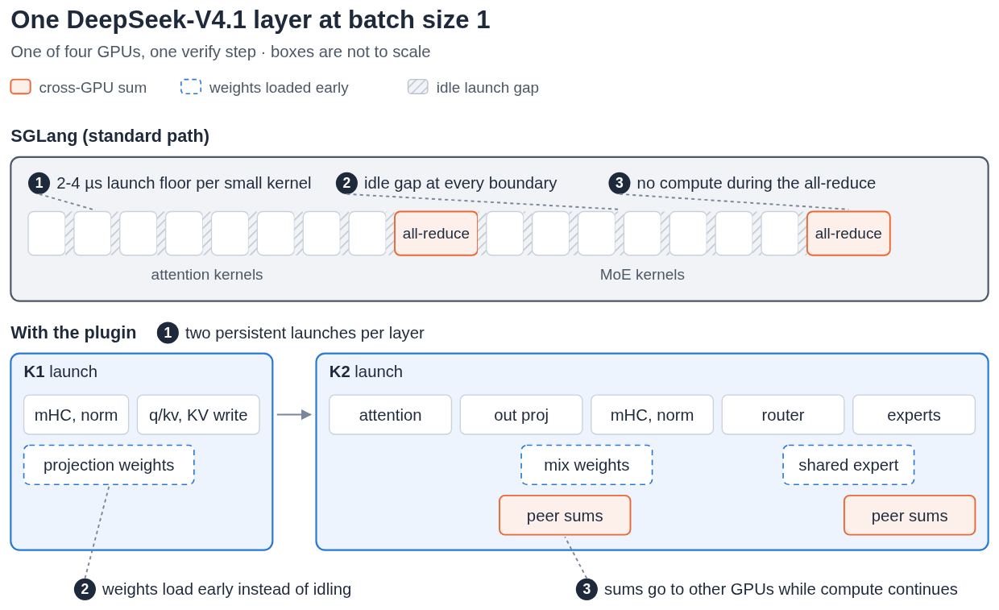
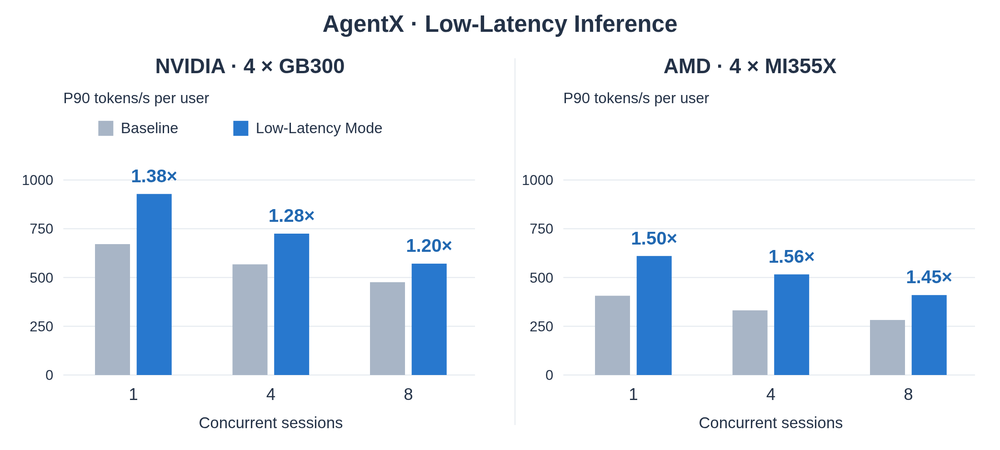

低并发场景下，比如一个用户同时只开一两个会话的编码或智能体应用，单个请求每步要算的数据很少，延迟主要花在内核启动、内核之间的空等和多卡通信上。SGLang、NVIDIA 和 AMD 团队在这篇 LMSYS 博客里介绍了 SGLang 低延迟模式：用一个插件框架，把厂商为特定模型和硬件写的深度融合内核接进 SGLang，而不把这些代码合进 SGLang 主仓库。测试模型是 DeepSeek-V4.1-Flash 加 DSpark 投机解码（DSpark 是这套部署用的草稿方案：一个小的草稿头每步按顺序逐个提出 5 个草稿 token，再由主模型一次验证；博客称它为 Markov 头，没有进一步说明结构），在 AgentX 智能体轨迹回放上，4 张 NVIDIA GB300、1 个并发会话时，每用户 P90 生成速度从 671.2 提到 928.4 token/s（1.38 倍）；4 张 AMD MI355X、4 个并发会话时，从 331.6 提到 516.0 token/s（1.56 倍）。对照组都是同一硬件上的标准 SGLang。这是工程博客，不是论文，数字由作者团队自己测，没有第三方复现。
1. 问题：小批量时，时间不花在计算上
只有 1 个请求时，DSpark 每步只验证 6 行 token，也就是主模型一次前向只处理 6 个位置：博客没有拆开说，按 5 个草稿 token 推算，应是上一步确定的 1 个 token 加 5 个草稿 token。矩阵乘法本身很快，真正占时间的是一串小内核前后排队、每个内核启动和收尾的空档，以及张量并行每层两次跨卡归约（把各卡的部分结果加起来）时 GPU 什么都不算的等待。批量大时这些开销被大量计算摊薄，批量小时就成了主角。
针对特定模型、硬件和并发规模做深度融合可以把这些空档压掉，但每一种组合都要单独写一套。硬件有 NVIDIA 和 AMD 好几代，模型结构各不相同，并行方式也不同，全部放进 SGLang 主仓库会让代码和评审负担一直增长。所以这篇博客其实讲了两件事：两家厂商各自怎么做低延迟内核，以及 SGLang 怎么用插件把它们接进来又不背上维护负担。
2. NVIDIA：内核数量几乎没变，等待少了
NVIDIA 的实现叫 sgl-nvidia-mega。作者先在预热好的 CUDA graph 下剖析了一个解码层，1 个请求，每组约 800 次测量取中位数：
| 解码层中的区段 | SGLang | 加插件 | 省下 |
|---|---|---|---|
| 注意力（从上一个 MoE 输出到输出投影） | 33.4 µs | 18.3 µs | 15.1 µs |
| 注意力输出投影和张量并行归约 | 10.9 µs | 9.4 µs | 1.5 µs |
| MoE（从路由到归约后的输出） | 44.4 µs | 36.5 µs | 7.9 µs |
| 整层 | 96.8 µs | 68.4 µs | 28.4 µs |
整层快了 29%，其中一半多来自注意力区段。最值得注意的是，验证一步的内核总数只从 1205 个减到 1189 个。所以提速不是靠把内核合并成更少几个，而是让前后内核重叠起来、少等一会儿。博客也提醒，剖析本身会影响计时，各区段中位数加起来也不等于整层，这张表用来说明机制，不代表线上性能。
具体做了四件事：
- 下一个内核提前启动。 CUDA 的 PDL（programmatic dependent launch）允许后一个内核在前一个还在跑时就开始，先准备屏障、加载权重，再等输入。SGLang 原本就用 PDL，插件做的是把“可以开始”的信号放得更早。注意力在等 query 之前先开始收集 KV，RoPE（按 token 位置旋转 query 和 key 向量的位置编码）是逐元素的计算，可以在把 query 读进来的同时算完，省掉一个单独的内核。
- 在矩阵乘法收尾时直接把结果发出去。 注意力输出投影后，每张卡只有部分和，需要跨卡归约。原来的做法是矩阵乘法先把结果写回显存，下一个内核再读出来发给别的卡。插件让每个线程块算完自己那一块，就直接从寄存器通过 NVLink 多播写到其他卡，不用等整个矩阵乘法结束，也省掉一次读回。
- 路由没结束就开始算专家。 最多 8 行时，每个专家选中的 token 刚好放进一个 8 行的块，插件用位图记下每个专家被哪些 token 选中，再数位图里有几个 1 得到每个专家的行数，据此直接把各行放进块里，不用扫描或排序。它还在路由收尾的同时提前启动第一个专家矩阵乘法，让这一步的准备工作和路由重叠。这就是 MoE 区段省下 7.9 µs 的来源。
- 草稿采样放进一个内核。 DSpark 的草稿头要按顺序提出 5 个 token，原来每个 token 要单独启动。插件在每张卡上一次启动完成全部 5 个，草稿阶段从 85.1 µs 降到 34.2 µs，验收逻辑不变。

测试负载固定为输入 8K、输出 1K。为了只比较插件本身，两次运行的设置相同，投机解码的平均接受长度都模拟成 3.51（每次验证平均接受 3.51 个草稿 token），唯一的区别是插件开关。结果是 1 到 8 个并发请求时，每用户解码速度提高 12% 到 38%。并发越低提速越多，这符合前面的分析：被省下的是固定的等待开销，请求越少，它占的比例越大。

这张图还有一个博客没明说的结论。插件开启、2 个请求时，每用户约 840 token/s，比插件关闭、1 个请求的约 745 token/s 还快，而每卡总吞吐从约 165 提到约 325 token/s。也就是说，对延迟有硬要求的服务，用插件后可以把并发翻倍，单用户速度仍然不比原来差。
3. AMD：每层只启动两个常驻内核
AMD 的实现叫 sgl-amd-mono，支持 MI355X 和 MI350X，走的是另一条路。作者认为 AMD 上低并发有三项主要开销：即使用了 HIP graph 免去 CPU 端的启动，每个小内核在 GPU 上仍要 2 到 4 µs；前一个内核收尾、后一个起步的空档里计算单元闲着，权重加载也停了；每层两次跨卡 all-reduce 期间没有任何计算。

插件用 FlyDSL（AMD 侧写 GPU 内核的工具）把一层的大部分工作合成两个常驻内核（persistent kernel：启动一次后一直留在 GPU 上，自己依次处理多个阶段，而不是每个小步骤各启动一个内核）。K1 做 mHC 更新（mHC 是 DeepSeek 的流形约束超连接，把残差流扩成几条并行的流，每层用一个受约束的小矩阵把它们混合；这里的更新就是这一步混合）、Q/KV 投影和写 KV cache；K2 做注意力、输出投影、MoE 和两次 all-reduce。两者之间保留一次启动边界，是为了保证 K1 写的 KV 在 K2 读之前对整张卡可见。
在一个内核内部，各阶段靠“带解码步编号的值”接力：每个阶段把算出的值和当前解码步的编号存在一起，下一个阶段不论在本卡还是别的卡，都反复读这个位置。读到的编号等于当前步，就说明这一步的值已经写好，可以开始算。这样不需要另设标志位，也不用每步清零。博客没写值和编号具体怎样一起写入。不依赖路由结果的权重提前加载，路由选出专家后再加载专家权重。all-reduce 也放进了内核：每算完一块输出就推到所有卡，各卡按固定顺序求和，其他工作组同时继续算。
这样做有一个风险：一张卡卡住，所有卡都会在内核里等。为此，每次跨卡等待都设了比 SGLang 看门狗更短的超时，超时后所有卡一起终止这次启动，而不是让整个服务挂住。
4. 插件框架：专用内核放在主仓库之外
外部内核库通过四步接入。第一步是注册，库为每种支持的模型结构声明自己的要求和构建入口。第二步是检查：在加载权重前核对硬件、精度、并行方式等是否兼容，不兼容就尽早报错，不要等到运行中才出问题。第三步是构建，在初始化时准备好权重和资源，并且在确定 KV cache 大小之前完成，所以插件占用的显存会被算进去，不会和 KV cache 抢。第四步是运行时分派：插件可以只覆盖部分步骤类型和 token 数，不覆盖的步骤回到 SGLang 原来的前向。各张卡必须对“这一步走不走插件”达成一致，否则会进入不匹配的集合通信。CUDA graph 捕获时选好的路径会被记录下来，之后回放不必再做 Python 端的判断。
这个设计的好处是厂商团队可以独立迭代，SGLang 只维护接口。代价是外部内核不经过 SGLang 常规的代码评审，正确性要靠接口层的测试来兜底，而这部分测试博客说还在计划中。
5. 智能体负载上的结果
AgentX 轨迹回放模拟真实的智能体会话，指标是每用户 P90 生成速度（每个用户会话的生成速度按 token/s 计，取 90 分位；博客没有给出更细的统计口径），两边都是 4 卡张量并行加 DSpark，只切换插件开关。

| 硬件 | 1 个会话 | 4 个会话 | 8 个会话 |
|---|---|---|---|
| 4 × GB300 | 1.38 倍 | 1.28 倍 | 1.20 倍 |
| 4 × MI355X | 1.50 倍 | 1.56 倍 | 1.45 倍 |
NVIDIA 上并发越高提速越小，和固定负载的结果一致。AMD 上三档都在 1.45 倍以上，4 个会话时最高。一个可能的原因是 AMD 的标准路径起点更低：1 个会话时基线约 405 token/s，只有 GB300 基线的六成，可压缩的空档更多。两家硬件、内核做法都不同，这组数字不适合用来比较哪家硬件更快。
6. 局限与实践意义
- 目前只支持 DeepSeek-V4.1-Flash 加 DSpark 这一组合，GLM-5.3、K3、MiniMax M3 等还在开发中。
- 博客没有给出精度对比，只说明不改变投机解码的验收逻辑。融合内核可能改变浮点运算的顺序（例如跨卡求和的顺序），数值上是否和标准路径完全一致，博客没有说明。
- 插件接口的 CI 和性能回归测试还在计划中，接口本身也处在早期，之后还会调整。
- 收益集中在 1 到 8 个并发。大批量吞吐场景下这些开销本来就被摊薄了，博客没有给出数据。
如果你的服务是低并发、对单用户延迟敏感，并且正好用 DeepSeek-V4.1-Flash 部署在 GB300 或 MI355X 上，可以直接试这个模式。对其他模型，更有用的是方法：在小批量下先剖析每层的时间线，看时间花在计算还是等待上；如果是等待，优先做内核重叠和通信前移，而不是一味减少内核数量。用插件把专用内核隔离在主框架之外，也是一个值得参考的维护办法。
讨论
欢迎补充实验细节、复现经验或不同看法。需 GitHub 登录。
正在加载讨论…